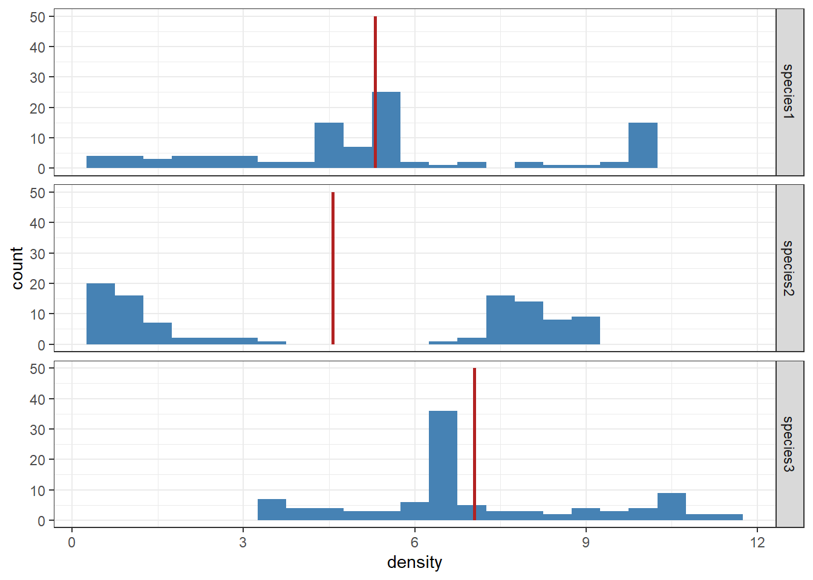

library(tidyverse)
pop <- read_delim("pop_data.csv", delim = ",")10 Introducing statistics
When given a dataset (such as the snail data in Section 4.2.2), it is difficult or even impossible to look at the entire set and understand the information therein. It is therefore important to be able to describe aspects of the data, such as the different variables and observations, through the use of statistical measurements. This has in part been covered in Chapter 6, but we will now take a more statistical approach to summarizing and describing data.
We will start by reading the pop_data.csv file again. The dataset contains population densities of three species at two spatial patches (A and B) at various points in time, ranging from 1 to 50 in steps of 1. The file is comma-separated, therefore we can read it using the read_delim function with the delimiter set to be the comma:
This dataset is a sample from a larger population,1 and while it is not clear how the units in the sample (the different time points) have been selected, we can assume that they have been randomly selected from the population of all possible units.
It would be impossible, if not very expensive, to collect data from all units in a population. This means that in practice we work with samples of data. We are still interested in making conclusions about the population, but these will be made from a smaller set of units that we can actually collect data from. The information we collect will depend on the units selected for the sample, and any two samples will contain different units if the sampling procedure is done with any kind of randomization.
Properties or descriptive statistics calculated on the population are called parameters (parameter in singular), and these will have the same value because the population contains all units we are interested in. In the sample we instead calculate statistics (statistic in singular) which is an estimate of the population parameter. The value of a statistic will also be different depending on the sample drawn and this inherent randomness is a vital aspect of statistical inference which will be covered in a later chapter.
10.1 Variable types
The pop dataset contains 5 variables of different types. A variable type is used to describe what type of information we can find within it and determines how we can further analyze the variable. We can separate variables into two main groups: qualitative and quantitative variables.
Qualitative variables are those describing categories—for example nationalities, sex, blood type, etc. In our pop data the variable patch is qualitative, as it describes a label used for patches of land. If we would choose to label the two patches as 1 and 2, the variable itself would still be qualitative as the numbers do not have a numeric meaning.
Quantitative variables are those describing real numbers, for example height, weight, or final times in a 100 m race. The numbers represent real numeric values instead of just labels. There are two sub-types of quantitative variables; discrete and continuous. A discrete variable may only take on integer (i.e., whole number) values, or a limited amount of decimals. The number of siblings would be a discrete variable, as one cannot have 2.32451 siblings and cannot measure the value with an infinite amount of decimals. Continuous variables on the other hand can be measured with this amount of detail. An example would be a person’s height.
In our dataset the three species’ density variables (number of individuals per unit area) are considered continuous quantitative variables, as they represent a real numeric value that can be measured with infinite amount of decimals. Even though the loaded dataset contain values with only two decimals, this is only done for rounding purposes and does not prevent the variable itself to be measured with infinite amount of decimals.
Note
Note that we differentiate from the variable types used within programming in earlier chapters and types used to describe variables within statistics. Some terminology is similar but the biggest difference is that within programming we differentiate between various types of quantitative (numeric) variables based on the amount of information they store on the disk.
A quick conversion between the two terminologies would be:
| Type in R | Type in statistics |
|---|---|
character |
qualitative |
factor |
qualitative |
logical |
qualitative |
numeric |
quantitative (discrete or continuous) |
integer |
discrete quantitative |
10.2 Variable scales
In addition to describing what values we can expect in a variable, we can also use a variable scale to get information how the values relate to one another. Both the type and scale of a variable are important aspects to define or learn before analyzing the variable to know which methods are suitable.
Qualitative variables can have one of two different scales: nominal and ordinal.
The nominal scale is defined by categories that cannot be ordered in any logical way. For instance it cannot be said that one patch comes “before” the other, or that it is “better” in any way.2
The ordinal scale is defined by categories that can be ordered. Sizes of clothes are a good example of categories that can be ordered in such a way that the size continually increases (S < M < L). However, we cannot define how much the difference actually is, or if the difference is the same between any two adjacent categories.3
Quantitative variables can also have one of two different scales: interval and ratio.
The interval scale is an upgrade to the ordinal scale, where values are still ordered but additionally the difference between any two distinct values is also meaningful. An example would be temperature measured in Celsius degrees: the difference between any two temperature values is itself always meaningful. Note however that the actual values, by themselves, need not mean anything. For example, a temperature of 0°C does not mean that the thing measured does not exist. In fact, one might as well define the zero point to be anywhere else, and it is purely by convention that it is set to the freezing point of water under normal atmospheric pressure.
The ratio scale does have a defined zero point, which creates the possibility for calculating ratios between values. We can say that the density of one species (0.2) can be twice the size of the density of another (0.1) because the value of 0 actually means that there is no presence of the species at all.
Important
There is only one instance where the scale of the variable is implemented in R; namely, when we create ordered factors following an ordinal scale (Section 8.3). Otherwise this information is not saved in an R object. This makes the knowledge of the scale, and what type of operations one can use with it, very important to know when programming. Ignoring this makes it very easy to end up in situations where we calculate inappropriate values.
10.3 Summarizing a variable
There are two main ways to summarize a variable; either visualize its distribution, or present various descriptive statistics that provide information about the variable.
10.3.1 Distributions
We have already looked at different ways to visualize a distribution of a variable in Chapter 7 which we can summarize as follows.
A qualitative variable can be visualized using a bar plot—or, if a bar plot is not appropriate (Section 7.3), then by using points. If the variable follows the ordinal scale, the categories on the x-axis should follow the same order. If the variable follows the nominal scale we do not have to follow any specific order of the categories, but it is usually nice to order them either alphabetically or in descending order based on the (relative) frequency of the category.
pop |>
ggplot(aes(x = patch)) +
geom_bar(fill = "steelblue") +
theme_bw()
In this instance a bar plot was entirely appropriate, but here is the same figure using points instead:
pop |>
group_by(patch) |>
summarize(count = n()) |>
ungroup() |>
ggplot(aes(x = patch, y = count)) +
geom_point(color = "steelblue") +
theme_bw()
The latter plot makes it absolutely clear that the number of units in each patch are equal. By contrast, it is not necessarily easy to tell from a bar plot whether there is a small difference between the heights of the bars.
When visualizing the distribution, it is customary to use the relative frequency (%) of each category instead of their absolute frequency (count). This can be done directly in the ggplot-process without the need for additional data processing prior to the visualization. In this case, the default calculation done is counting the number of occurrences of each category and the height (y) of the bars being defined by the count. The after_stat() function allows for calculations after the counting has been completed. for example, count / sum(count) would calculate the relative frequency of each category compared to the total number of observations. If we multiply this value by 100, we can show the percent of observations of each category.
pop |>
# The after_stat below changes the calculation of the y-axis to
# (count / sum(count)) * 100, instead of the default, which is count
ggplot(aes(x = patch, y = after_stat(count / sum(count)) * 100)) +
geom_bar(fill = "steelblue") +
# Fix the y-axis marks to display percentages:
scale_y_continuous(name = "percent", labels = paste0(0:5 * 10, "%")) +
theme_bw()
A quantitative variable can be visualized in two different ways depending on the variable type. A discrete variable, which per definition only can assume whole (or a set number of decimals) numbers, can be visualized using a bar plot because it usually contains a finite number of unique values and at the same time cannot have values in between. A continuous variable can be measured with infinite amount of decimal places which means that there exist an infinite amount of unique values. Instead of having an infinite number of bars in a bar plot, we group adjacent values together into intervals and create a histogram.
pop |>
pivot_longer(cols = starts_with("species"),
names_to = "species",
values_to = "density") |>
ggplot(aes(x = density)) +
geom_histogram(binwidth = 0.5, fill = "steelblue") +
facet_grid(species ~ .) +
theme_bw()
We do not differentiate between a variable following an interval or a ratio scale when visualizing a distribution, but it is something to take into account when interpreting the plots. For example, if a variable follows the interval scale, we could not state that “the values are split into two main groups, one twice the value of the other”.
Another way to visualize a continuous variable is by using a box(-and-whisker) plot, but this type of plot requires information about different measures of the variable, so we will return to this visualization later in this chapter.
10.3.2 Measures of center
A simple way to summarize the position of a variable is a measure of center. As the name implies, it describes where on the unit scale the values are centered around, and gives an indication of the magnitude (level) of the values.
Mean
The most common measure of center is the mean, which can be calculated on a continuous variable. Assume that we have n samples from a population, and the measurement on the ith unit is denoted \(x_i\). The mean of the sample is then calculated as \[ \bar{x} = \frac{\sum_{i = 1}^n{x_i}}{n} \tag{10.1}\] where \(\bar{x}\) (pronounced “x-bar”) is the statistic that aims to estimate the population mean \(\mu\) (the Greek letter mu).
Warning
Even though it is mathematically possible to calculate a mean of a discrete variable, the resulting value would not be an actual value of the variable. For instance the mean number of siblings of a person might turn out to be 1.6, but no person will have 1 full plus another 6/10 sibling.
To calculate the density of each of the different species in our dataset, all we need to do is use the mean function and follow the pattern we learned about at the end of Section 6.2:
pop |>
pivot_longer(cols = starts_with("species"),
names_to = "species",
values_to = "density") |>
group_by(species) |>
summarize(mean = mean(density)) |>
ungroup()# A tibble: 3 × 2
species mean
<chr> <dbl>
1 species1 5.30
2 species2 4.56
3 species3 7.04Each mean shows the position of the center for each variable (species) which can also be added to the visualization.
pop |>
pivot_longer(cols = starts_with("species"),
names_to = "species",
values_to = "density") |>
group_by(species) |>
mutate(mean = mean(density)) |>
ungroup() |>
ggplot(aes(x = density)) + # Begin visualization
geom_histogram(binwidth = 0.5, fill = "steelblue") +
# Facets the histogram based on species
facet_grid(species ~ .) +
labs(y = "count") +
# Adds a custom segment to the visualization
geom_segment(
# Define start and end values of the segment:
aes(x = mean, xend = mean, y = 0, yend = 50),
# Define width and color of the segment:
linewidth = 1, color = "firebrick"
) +
theme_bw()
The mean gives us a measure of the center of the data—but as we can see in the visualizations, sometimes the mean by itself misrepresents the data as a whole. For example, the mean of Species 2 is 4.56% but the values of the variable are grouped either lower or higher than this value. The mean itself isn’t actually close to an observed value. Compare this to the mean of Species 1 (5.3%) which actually falls close to observed values. The mean is better at describing this variable than the previous.
We would not have been able to draw these conclusions without visualizing the variable and this shows the importance of visualizations when describing data.
Median
Another instance when the mean misrepresents a variable’s center is if there are outliers present in the data. An outlier is an observation that is located far away from the majority of the other observations. They affect the mean by moving the measure towards the direction of the outliers and thereby shifting the center away from the majority of the observations. This could be identified if we visualized the distribution alongside the mean but we can also use another measure of center as an alternative.
The median is much more robust against outliers than the mean, in the sense that it is less affected by them. It describes the middle observation if we were to order the values in increasing size. Any single extremely small or large value would not affect position of the middle observation, as long as there are sufficiently many data points.
We can calculate the position (i.e., the index of the value in a vector) of the median as (n + 1) / 2, where n is the number of data points. This results in either a whole number (if n is odd), in which case the value at that position is the median. Or it could result in a half number (if n is even), in which case the convention is to put the median halfway between the two positions obtained by rounding the position’s number up and down, respectively.
The process of calculating the median can be done step by step as follows:
# The number of observations is the number of rows in the data:
n <- nrow(pop)
# Find the position (index) of the median:
position <- (n + 1) / 2 # The position is 50.5
# Therefore we need to round down and up, to get the vector c(50, 51):
positionVec <- c(floor(position), ceiling(position))
pop |>
select(species1) |> # Keep only this one column
arrange(species1) |> # Order the densities from lowest to largest
slice(positionVec) |> # Get the middle two values (at rows 50 and 51)
summarize(median = mean(species1)) # Obtain their mean, which is the median# A tibble: 1 × 1
median
<dbl>
1 5.28This becomes tedious to do multiple times, but thankfully the function median does all of this for us automatically. Using the function, the median value is also 5.28.4
Quantiles
A generalization of the median is a quantile which aims to divide the ordered values into a specific number of parts. For example, we can consider the median a quantile where the data are split up into two equally-sized parts. Other common quantiles are quartiles which divide the data into four equal quarters, each containing 25% of the data. The first quartile (which splits the data into 25% | 75%) and the third quartile (splits 75% | 25%) can be used as additional measures to gain information about different positions.
Note
The second quartile is actually just the median as it splits the data into two equally sized parts, 50% | 50%, the same as we defined in the median.
The function quantile() is used to calculate specific quantiles of a variable via the argument probs that can be given one or more numeric values. If we want to calculate the three quartiles we would give the values c(0.25, 0.50, 0.75).
quartiles <- quantile(pop$species1, probs = c(0.25, 0.50, 0.75))
quartiles 25% 50% 75%
3.7200 5.2800 6.0425 We mentioned earlier that we can visualize a quantitative variable with another type of visualization than a histogram. A box (and-whiskers) plot uses the values of the minimum, maximum, and the three quartiles to show the distribution of a variable. The function in R for a box plot is geom_boxplot().
pop |>
pivot_longer(cols = starts_with("species"),
names_to = "species",
values_to = "density") |>
ggplot(aes(x = density)) +
geom_boxplot(color = "steelblue", fill = "steelblue", alpha = 0.2) +
# Facets the histogram based on species
facet_grid(species ~ .) +
labs(x = "Population Density") +
# The y-axis is not relevant in this type of visualization,
# so it is removed by setting breaks = NULL:
scale_y_continuous(breaks = NULL) +
theme_bw()
The line (whiskers) mark the range of the first and last 25% of the data limited by the smallest and largest value. The box in the middle mark the range of the middle 50% of the data with the bold line inside the box showing the median. The function in R also does something that we might not have expected for Species 1. There are a number of points further away from the line that are not considered to be a part of the box plot data, they are instead considered outliers. R defines any value further than 1.5 times the interquartile range (see Section 10.3.3.2) from the edges of the box as outliers.
10.3.3 Measures of spread or uncertainty
As we saw in Figure 10.1, the measure of a center by itself does not provide the full picture of a variable. Species 1 and 2 had about the same mean value but the values of the observations are spread out very differently. When summarizing a variable, it is also important to describe the spread of the values, the amount of variation they have. This gives a sense of how two variables with the same mean might differ.
Standard deviation
The standard deviation can be seen as the “average distance from the mean”—that is, how far away from the mean we expect a randomly selected value to be. The formula for the standard deviation is \[ s = \sqrt{\frac{\sum_{i = 1}^n{(x_i - \bar{x})^2}}{n - 1}} \tag{10.2}\] where \(x_i\) is the ith observed value, \(\bar{x}\) is their mean, and \(n\) is the number of observations.
We can get an understanding of why the standard deviation is seen as an average by going through each step of the calculation. First we calculate the difference between the observed value and the mean, where values further from the mean result in a bigger difference (negative or positive):
meanSpecies1 <- mean(pop$species1)
pop$species1 - meanSpecies1 [1] 3.1254 4.8254 2.4554 4.8154 1.7854 4.8154 1.1854 4.8054 0.6854
[10] 4.7954 0.2754 4.7854 -0.0346 4.7754 -0.2846 4.7554 -0.4846 4.7454
[19] -0.6446 4.7354 -0.7746 4.7154 -0.8746 4.7054 -0.9446 4.6854 -1.0046
[28] 4.6554 -1.0346 4.5754 -1.0446 4.4154 -1.0446 4.1054 -1.0146 3.5754
[37] -0.9646 2.8054 -0.9046 1.8654 -0.8146 0.8954 -0.7246 0.0454 -0.6146
[46] -0.6346 -0.5046 -1.1346 -0.3946 -1.5146 -0.2846 -1.7946 -0.1846 -2.0046
[55] -0.0946 -2.1746 -0.0146 -2.3046 0.0554 -2.4246 0.1054 -2.5246 0.1554
[64] -2.6246 0.1854 -2.7246 0.2154 -2.8346 0.2254 -2.9446 0.2454 -3.0746
[73] 0.2454 -3.2046 0.2454 -3.3446 0.2454 -3.4946 0.2454 -3.6446 0.2354
[82] -3.7946 0.2354 -3.9446 0.2254 -4.0846 0.2254 -4.2246 0.2154 -4.3446
[91] 0.2154 -4.4646 0.2154 -4.5646 0.2054 -4.6646 0.2054 -4.7546 0.2054
[100] -4.8346When calculating the average distance, we need all values to be positive (you cannot have a negative distance). So we square all the values, making them all positive:
(pop$species1 - meanSpecies1)^2 [1] 9.76812516 23.28448516 6.02898916 23.18807716 3.18765316 23.18807716
[7] 1.40517316 23.09186916 0.46977316 22.99586116 0.07584516 22.90005316
[13] 0.00119716 22.80444516 0.08099716 22.61382916 0.23483716 22.51882116
[19] 0.41550916 22.42401316 0.60000516 22.23499716 0.76492516 22.14078916
[25] 0.89226916 21.95297316 1.00922116 21.67274916 1.07039716 20.93428516
[31] 1.09118916 19.49575716 1.09118916 16.85430916 1.02941316 12.78348516
[37] 0.93045316 7.87026916 0.81830116 3.47971716 0.66357316 0.80174116
[43] 0.52504516 0.00206116 0.37773316 0.40271716 0.25462116 1.28731716
[49] 0.15570916 2.29401316 0.08099716 3.22058916 0.03407716 4.01842116
[55] 0.00894916 4.72888516 0.00021316 5.31118116 0.00306916 5.87868516
[61] 0.01110916 6.37360516 0.02414916 6.88852516 0.03437316 7.42344516
[67] 0.04639716 8.03495716 0.05080516 8.67066916 0.06022116 9.45316516
[73] 0.06022116 10.26946116 0.06022116 11.18634916 0.06022116 12.21222916
[79] 0.06022116 13.28310916 0.05541316 14.39898916 0.05541316 15.55986916
[85] 0.05080516 16.68395716 0.05080516 17.84724516 0.04639716 18.87554916
[91] 0.04639716 19.93265316 0.04639716 20.83557316 0.04218916 21.75849316
[97] 0.04218916 22.60622116 0.04218916 23.37335716Next, we sum all the squared differences so we get a sense of the total (squared) distance from every observation to the mean:
sum((pop$species1 - meanSpecies1)^2)[1] 746.0575To get an average (squared) distance, we then divide by the number of observations or at least something that depends on the number of observations, \(n - 1\).5
n <- length(pop$species1)
sum((pop$species1 - meanSpecies1)^2) / (n - 1)[1] 7.535934This value is still an average of the squared distances, which is not simple to actually interpret.6 So in order to make it interpretable, we need to take the square root of the value:
squaredDistances <- sum((pop$species1 - meanSpecies1)^2) / (n - 1)
sqrt(squaredDistances)[1] 2.745166Instead of squared distances, we now have a representation of just the distances between each observation and its mean. Thankfully, we do not need to go through all of these steps every time we want to calculate the standard deviation, because we can just use the built-in function sd:
sd(pop$species1)[1] 2.745166To compare the standard deviations of the three species in the pop dataset, we can use the same type of grouped calculation we have done before:
pop |>
pivot_longer(cols = starts_with("species"),
names_to = "species",
values_to = "density") |>
group_by(species) |>
summarize(mean = mean(density),
stdev = sd(density)) |>
ungroup()# A tibble: 3 × 3
species mean stdev
<chr> <dbl> <dbl>
1 species1 5.30 2.75
2 species2 4.56 3.57
3 species3 7.04 2.11Species 2 does indeed have a higher standard deviation than both species 1 and 3, indicating that its observations are further away from the mean.
Interquartile range
Similarly to the mean, the standard deviation will overestimate the spread of the variable if there are outliers present. Since outliers are defined as observations far from the rest of the observations, they will also be far from the mean, thereby increasing the average distance from the mean and resulting in an overestimation. Instead, we can use the difference between the first and third quartile as an indication of the spread of the variable. This is called the interquartile range (IQR). For instance, the IQR for Species 1 is 2.3225, using the indices quartiles[3] - quartiles[1] created earlier.
10.4 Summary and exercises
Visualizations and descriptive statistics are used to summarize variables in a dataset. Different forms and measures are used depending on the variable type and the scale it follows in order to properly describe the variable. Visualizations are used to show the distribution or shape of the data. The measure of center shows the placement of a quantitative variable while measures of spread show the variation of the values around its center.
For the exercises we will return to the iris dataset seen in earlier chapters (ex. Section 5.3). Make sure to convert the data to a tibble and save it to an object before starting these exercises.
Visualize the variable
Specieswith a suitable plot. How many of each species are present in the data?Visualize the variable
Petal.Widthwith a suitable plot. What observations can be made from this plot?Calculate the mean and standard deviation of both
Petaltraits (length and width) within each species. What can we learn about the different species from this summary?Calculate the median and interquartile range of both the
Petaltraits within each species. Keep the mean and standard deviation in the summary and compare the measures of center and the measures of spread with each other. Does the summary indicate that there might be outliers present in any combination of species and trait?
“Population” in the statistical sense of the word is not to be confused with “population” from ecology. It simply means the complete set of all entities out there which we take our smaller sample from.↩︎
Note that there might exist other information, such as the size of the patches, that can be used to order the categories, but then we are ordering based on another variable and not the categories themselves.↩︎
A quantitative variable can be thought of as following an ordinal scale if the measurements are intervals—e.g., 0-4, 5-9, 10-19, etc.↩︎
We would expect the same value as the function uses the same process as shown earlier.↩︎
We will return to why we do not use \(n\) directly in a later chapter.↩︎
The squared distance is actually a component in more advanced calculations, and is called the variance of a variable.↩︎